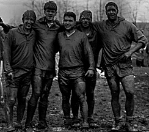
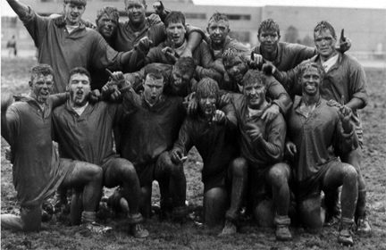
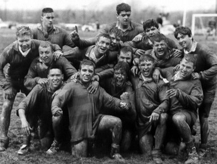

S=Scrimmage L=League Game E=Exhibition T=Tournament M=Mens P=Playoffs
Spring 1992 |
|||||
| Date | PF | PA | Type | Opponent | Venue |
| 02-29 | 20 | 6 | E | Fordham | Manhattan,NY |
| 03-06 | 12 | 0 | E | Brockport | Brockport,NY |
| 04-04 | 30 | 4 | E | St Bonaventure | Delaware Park |
| 0411 | 14 | 6 | E | Fredonia | Fredonia,NY |
| 04-25 | 8 | 0 | T | Binghamton State | ECC South,Orchard Park,NY |
| 04-25 | 21 | 0 | T | Albany State | ECC South |
| 04-26 | 4 | 0 | T | Cortland State | ECC South |
| 04-26 | 8 | 3 | T | Oswego State | ECC South |
| 04-26 | B team | ECC South | |||
| Totals | 117 | 19 | Won 8 Lost 1 | ||

The last college rugby game for five seniors who led the team to the 1992 NYS Collegiate
Tourney Championship versus Oswego State. All five had been with the team since they
were freshman.
Dave Sion, Tom Heltz, Eric Heltz, Jeff Calabrese, Dave Jamieson (Captain)

1992 New York State Tournament Collegiate B Division Winners

1992 New York State Tournament Collegiate B Division Winners